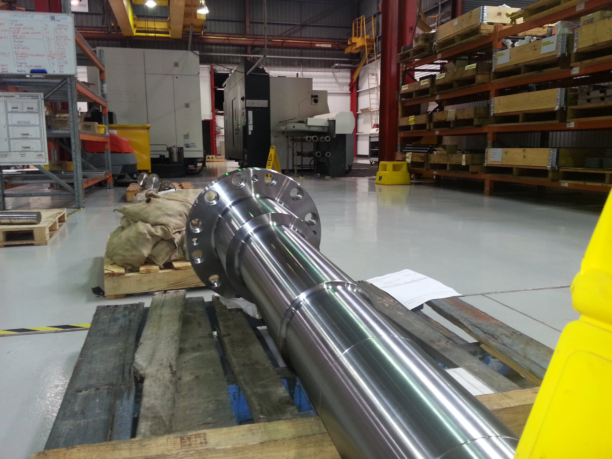

General Engineering Division
High-mix precision machining
for any industry,
any challenge
Not every project fits a specialist division. Nupress General Engineering handles the full spectrum — from one-off prototype machining to medium-volume production runs — with the same precision and reliability that defines every Nupress division.
What We Deliver
From single prototype
to production runs
Nupress General Engineering is the division for projects that don't fit a single category. If you need it precision-machined, we can manufacture it. Our team has the experience and equipment to tackle any challenge across any industry.
-
CNC Turning & Milling Full 5-axis capability for complex prismatic and turned components
-
Prototype Machining Single-piece and small batch work — fast turnaround, engineering support
-
Reverse Engineering Obsolete parts recreated from physical samples or partial drawings
-
Design for Manufacturability Engineering review to reduce cost and improve part quality
-
Multi-material Capability Steel, aluminium, stainless, titanium, copper, plastics, and composites
-
Secondary Operations Heat treatment, surface finishing, anodising, plating (coordinated)

Technical Data
General Engineering Specifications
| Capability | Specification |
|---|---|
| CNC Milling | 3-axis and 5-axis simultaneous; various machine sizes |
| CNC Turning | Live tooling, sub-spindle, Y-axis turning centres |
| Standard Tolerance | ±0.01mm; tighter tolerances achievable per drawing |
| Metals | All grades of steel, aluminium, stainless, titanium, copper alloys |
| Plastics | Nylon, Delrin, PEEK, PTFE, polycarbonate, ABS |
| Volume Range | 1-off prototype to 10,000+ piece production runs |
| Quote Turnaround | Standard <3 business days from receipt of drawings |
| Reverse Engineering | 3D scanning coordination available; conventional measurement on site |
| Secondary Operations | Heat treatment, anodising, plating, painting coordinated |
| Quality | ISO 9001:2015, dimensional reports, CoC on request |
Have a project that needs machining?
Send us your drawings or samples — we'll respond with a quote within 3 business days.